|
|
| |
Let与const |
//报错:未定义
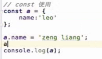 // zneg liang
| 如果函数内部有相同的变量定义,不论定义位置,都是屏蔽掉外部的定义, 如果是var声明,由于存在变量提升,结果就是undefined,如果是let,没有提升,则会报错
Const并不是声明的值不可以修改,而是声明的常亮指针不可修改
完全冻结一个变量,使其无法被更改 | Es5函数声明会被提升,es6不会, 使用 ‘use strict’可以开启es6模式 |
hasOwnProperty | 用法：`obj.hasOwnProperty(key) //obj为对象 key为所要判断的字符串` 判断一个对象属性里是否包含某个key，key为字符串,此方法不会去判断原型 var obj={ key:123 }; obj.hasOwnProperty('key'); //true obj.hasOwnProperty('hasOwnProperty'); //false
| 参考文档:https://www.jianshu.com/p/19764422baa08
https://www.cnblogs.com/weiqinl/p/8683207.html |
|
Class: | class Person{//定义了一个名字为Person的类 constructor(name,age){//constructor是一个构造方法，用来接收参数 this.name = name;//this代表的是实例对象 this.age=age; } say(){//这是一个类的方法，注意千万不要加上function return "我的名字叫" + this.name+"今年"+this.age+"岁了"; } }var obj=new Person("laotie",88);console.log(obj.say());//我的名字叫laotie今年88岁了
| constructor中定义的属性可以称为实例属性（即定义在this对象上），constructor外声明的属性都是定义在原型上的，可以称为原型属性（即定义在class上)。hasOwnProperty()函数用于判断属性是否是实例属性。其结果是一个布尔值， true说明是实例属性，false说明不是实例属性。in操作符会在通过对象能够访问给定属性时返回true,无论该属性存在于实例中还是原型中.
class不存在变量提升，所以需要先定义再使用。因为ES6不会把类的声明提升到代码头部，但是ES5就不一样,ES5存在变量提升,可以先使用，然后再定义。
| 参考文档:https://www.jianshu.com/p/86267fab4878 |
| Super:
| super作为函数调用时，代表父类的构造函数。ES6 要求，子类的构造函数必须执行一次super函数。 class A {} class B extends A { constructor() { super(); } } 上面代码中，子类B的构造函数之中的super()，代表调用父类的构造函数。这是必须的，否则 JavaScript 引擎会报错。
注意，super虽然代表了父类A的构造函数，但是返回的是子类B的实例，即super内部的this指的是B，因此super()在这里相当于A.prototype.constructor.call(this)。 | https://blog.csdn.net/linusc/article/details/78770755 |
| Static: | 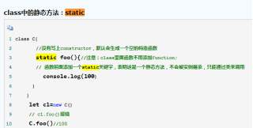 |
|
| exntend | 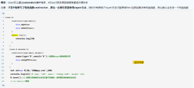 |
|
For of | 可以跳出循环(break,continue),之前的for in 不可以 |
|
|
Symbol | ES5对象属性名都是字符串容易造成属性名的冲突。 ES6引入了一种新的原始数据类型Symbol，表示独一无二的值。 基本数据类型新增Symbol | // 没有参数的情况 var s1 = Symbol(); var s2 = Symbol();
s1 === s2 // false
// 有参数的情况 var s1 = Symbol("foo"); var s2 = Symbol("foo");
s1 === s2 // false | https://www.cnblogs.com/sker/p/5474591.html
https://www.jianshu.com/p/f40a77bbd74e
|
Iterator遍历器 | 具有Iterator接口的对象可以被for of 消费(调用) | Es6中,数组set,map包括字符串,都实现了Iterator接口 | https://www.jianshu.com/p/3bb77516fa7e
|
generator | 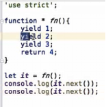 每次调用next()时yield自动会返回yield的值,但是用var a = yield 1的方式接不到值,也就是a是undefined Yield如果不在next中传值,返回的值默认就是undefined next中传值是唯一可以让yield有返回值的方法, function sum(a, b) { console.log(a,b) return a + b } function* a() { console.log(1) var x=yield 1 console.log(2) var z=yield 2 console.log(3) var b = sum(x,z) console.log(4) return b }
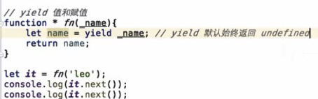
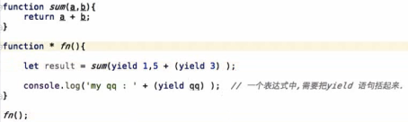 | For of 不会打印出done为true的内容,也是4不会被打印出来 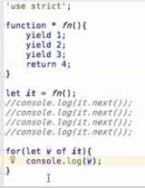
第一次调用.next时函数会跳到第一个yield语句上,但是还没有执行,第二次调用next时才会执行第一个yield,因此第一次调用next(5)并不会为第一个yield赋值
捕获异常 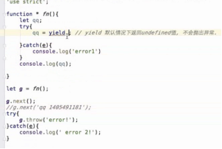 | https://www.jianshu.com/p/112373662dff |
set | 生成一个不重复的数组 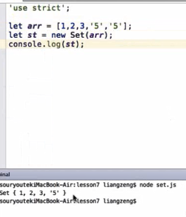 | 语法:
| 数组去重:
|
map | Key可以是任意值,相同的key会被覆盖
|
| Map可以传键值对,set只能传数,是一个类数组 |
Array | 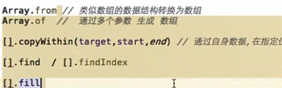 | From:可以将类数组转为数组同时第二个参数可以操作数组
|
|
|
| Of
|
|
|
| Find:查找匹配到结果的第一个值
比indexOf更强大,可以查找到NaN,indexOf不行
|
|
ArrayBuff | 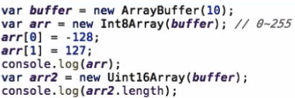 类型化数组: Unit8array 无符号8位,范围0-255 Int8Array 有符号8位,范围-128到127 | dataView 更方便的操作buff
|
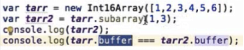 Subarray和Int16Array用的是一个内存地址 |
| 作用,读取二进制文件,或者图片进行修改 |
|
|
object |
| Object.is(NaN,NaN) 结果为true +0 === -0 //true NaN === NaN // false Object.is(+0, -0) // false Object.is(NaN, NaN) // true
|
|
Object.assign |
obj是完全等于obj2的 |
|
|
Object的遍历 |
| 可枚举属性:https://www.cnblogs.com/kongxy/p/4618173.html 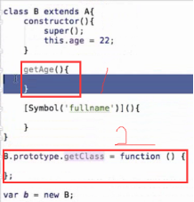 通过class创建的属性是不可枚举的,而通过prototype创建的则是可以枚举的 |
|
设置原型对象: Object.setPrototypeOf(obj,a) Object.getPrototypeOf(obj) | Es6 推荐的设置原型对象的方法 |
|
|
string字符串类 |
第二个参数表示起始位置,从哪里开始查询
复制文字 |
|
|
模板字符串 |
${}内部可以嵌入三元表达式或者方法 |
输出结果:
| tag`${name}`这种奇怪的语法可以把模板字符串转换成一个个的字符传到方法里,这样可以用来过滤字符,比如做一个安全的html,把<>转成<>方法中的字符串分割是以${}这种东西为分界线的 |
箭头函数 | 1. 箭头函数中没有arguments 2. 单行不用写return,多行要返回值的话必须写 3. 箭头函数没有自己的this, 它的this是继承而来; 默认指向在定义它时所处的对象(宿主对象),
|
|
|
数组解构 |
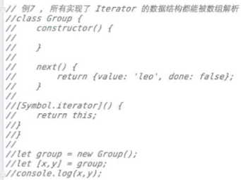
|
|
|
对象解构 | Var {name:name2}={name:’aaa’} Console.log(name) 此时会报错,因为那么并没有值,而name2其实被赋值为’aaa’ 同理,下图的log(a,b)也一样会报错,相当于a不存在,而是把{b:{c}}赋值解构了 而{namex}={name:’123’} 没有报错是因为该写法相当于{namex:namex}={name:’123’},所以log name是可以有结果的
只有undefined才能被x=15这样覆盖,其他值都不可以,包括null,x也会是null
Name被重复定义,也会报错
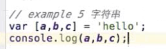 运行结果为 h e l |
|
|
| 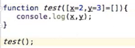 直接运行test会报错,因为test([])相当于只有key,而没有value,左边没办法解析的
结果为 2 3 90 |
|
|
| https://www.jianshu.com/p/1550752a9a65 https://www.cnblogs.com/diligenceday/p/5474126.html |
|
|
proxy |
在拦截其中使用in的话,内部是通过拦截器的has方法判断的
| 拦截操作是在Proxy实例对象上进行的，而非在{}对象上进行的
Function的代理:使用proxy内部的apply方法
Class的代理:使用proxy内部的construct方法
|
|
模块化 | 默认使用严格模式
Name不可重新赋值,否则会报异常 Export default 也是可以改名的
这样就可以 也可以全部引入
结果: 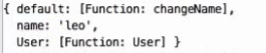 Export default的值会以 default的方式显示出来
默认的default重命名 |
Export不能写在方法里
Export var a=1是合法的 Export default var a = 1是不可以的 只能提前定义好a,然后再export default Default 输出的不是一个引用而是值 单纯的export输出的是引用 |
|
|
|
|
|